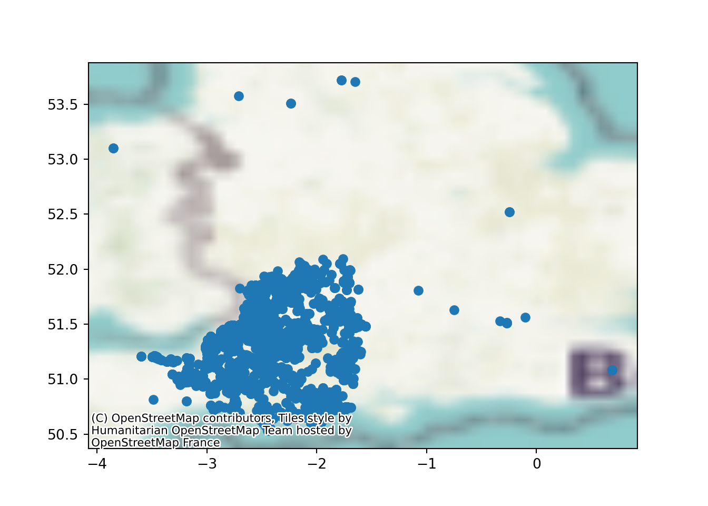
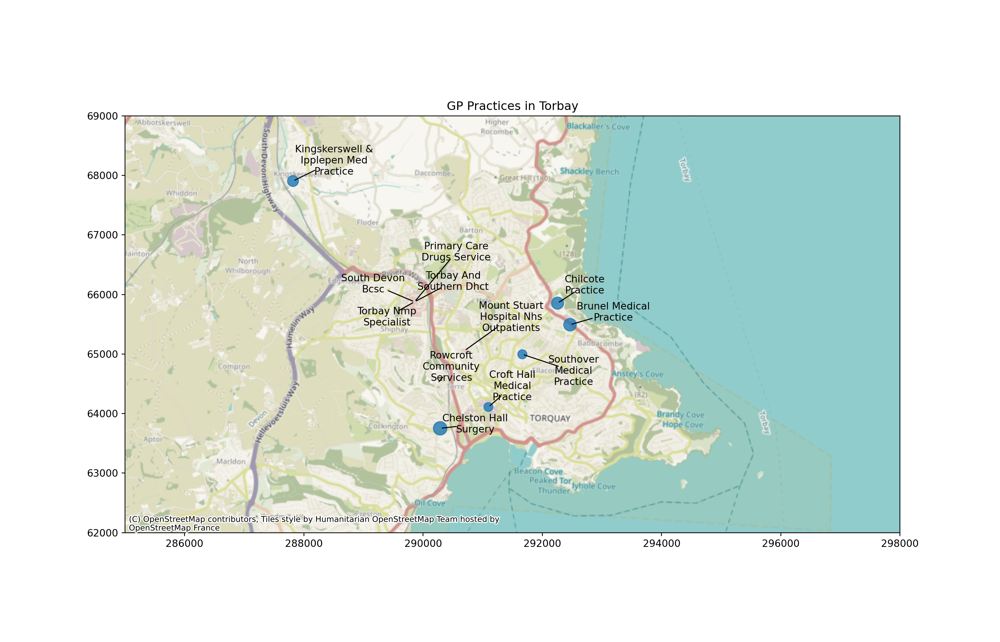

import geopandas
import matplotlib.pyplot as plt
import pandas as pd20 Static Maps with Matplotlib
For all of the code on this page, we need to first import geopandas.
We will also load in matplotlib so we can modify the default plots that are created by geopandas, and pandas so we can import and manipulate tabular data files.
20.1 Simple plots with the geopandas plot method
20.1.1 Choropleths
Geopandas has a great built-in method for quickly plotting your data.
Just call .plot() on your dataframe!
lsoa_2011_crime_figures_df = geopandas.read_file("https://github.com/hsma-programme/h6_3b_advanced_qgis_mapping_python/raw/main/h6_3b_advanced_qgis_and_mapping_in_python/example_code/lsoa_2011_sw5forces_crime_figures.gpkg")
lsoa_2011_crime_figures_df.plot()20.1.2 Point data
The .plot method works for point data too.
sw_5forces_stop_and_search_df = pd.read_csv("https://github.com/hsma-programme/h6_3b_advanced_qgis_mapping_python/raw/main/h6_3b_advanced_qgis_and_mapping_in_python/example_code/sw_5forces_stop_and_search.csv")
sw_5forces_stop_and_search_gdf = geopandas.GeoDataFrame(
sw_5forces_stop_and_search_df, # Our pandas dataframe
geometry = geopandas.points_from_xy(
sw_5forces_stop_and_search_df['Longitude'], # Our 'x' column (horizontal position of points)
sw_5forces_stop_and_search_df['Latitude'] # Our 'y' column (vertical position of points)
),
crs = 'EPSG:4326' # the coordinate reference system of the data - use EPSG:4326 if you are unsure
)
sw_5forces_stop_and_search_gdf.plot()20.2 Colouring maps by a column
20.2.1 Choropleths
You can also pass a column name to colour the plot by the values in that column…
Let’s see what columns we can choose from.
lsoa_2011_crime_figures_df.columnsIndex(['LSOA11CD', 'LSOA11NM', 'LSOA11NMW', 'Area',
'sw_5forces_street_by_lsoa_Anti-social behaviour',
'sw_5forces_street_by_lsoa_Bicycle theft',
'sw_5forces_street_by_lsoa_Burglary',
'sw_5forces_street_by_lsoa_Criminal damage and arson',
'sw_5forces_street_by_lsoa_Drugs',
'sw_5forces_street_by_lsoa_Other crime',
'sw_5forces_street_by_lsoa_Other theft',
'sw_5forces_street_by_lsoa_Possession of weapons',
'sw_5forces_street_by_lsoa_Public order',
'sw_5forces_street_by_lsoa_Robbery',
'sw_5forces_street_by_lsoa_Shoplifting',
'sw_5forces_street_by_lsoa_Theft from the person',
'sw_5forces_street_by_lsoa_Vehicle crime',
'sw_5forces_street_by_lsoa_Violence and sexual offences',
'sw_5forces_street_by_lsoa_Total number crimes', 'geometry'],
dtype='object')Let’s plot the ‘other crime’ counts by LSOA.
Though depending on your dataset, you may struggle to see the impact!
lsoa_2011_crime_figures_df.plot(column="sw_5forces_street_by_lsoa_Other crime")You can change the column name to explore different elements of your data.
20.2.2 Point data
Passing in a column name to the .plot method works for point data as well!
Note that we can pass in column= before the column name, or we can just pass it in like in the cell below.
As long as it is the first argument we pass in, Geopandas will recognise that it is the column we want to colour our geometry data by.
sw_5forces_stop_and_search_gdf.plot("Gender")20.3 Basemaps
A basemap - a recognisable map behind our points - will help our viewers understand what’s going on.
First, we need to import an additional library called contextily.
The standard alias the documentation recommends is cx
import contextily as cxLet’s add our first basemap.
ax = sw_5forces_stop_and_search_gdf.plot()
cx.add_basemap(
ax, # the figure we created using our plot method
crs=sw_5forces_stop_and_search_gdf.crs.to_string(), # we can pull the CRS out of the geodataframe!
zoom=8 # zoom level
)20.3.1 Zoom level in basemaps
Changing the zoom level will increase the quality of the map - but at the cost of longer load times.
Zoom level: 4
ax = sw_5forces_stop_and_search_gdf.plot()
cx.add_basemap(
ax,
crs=sw_5forces_stop_and_search_gdf.crs.to_string(),
zoom=4 # zoom level
)
Zoom level: 10
ax = sw_5forces_stop_and_search_gdf.plot()
cx.add_basemap(
ax,
crs=sw_5forces_stop_and_search_gdf.crs.to_string(),
zoom=10 # zoom level
)20.4 Coordinate reference systems and plots
But why does the UK look a bit wider than usual?
It’s because of our old friend the CRS.
We used EPSG:4326 to import our data.
Now, when we look online, we’ll see lots of recommendations to use the British National Grid - EPSG:27700 - when plotting data concerning the uk.
Let’s first try that by changing our import statement - will this work?
sw_5forces_stop_and_search_gdf_27700 = geopandas.GeoDataFrame(
sw_5forces_stop_and_search_df, # Our pandas dataframe
geometry = geopandas.points_from_xy(
sw_5forces_stop_and_search_df['Longitude'], # Our 'x' column (horizontal position of points)
sw_5forces_stop_and_search_df['Latitude'] # Our 'y' column (vertical position of points)
),
crs = 'EPSG:27700'
)
sw_5forces_stop_and_search_gdf_27700.plot()
Now our new map appears a bit… sea-y.
Which is fine if this is a map of crimes committed by pirates, but I’m pretty sure this isn’t.
This is because the BNSSG (EPSG:27700) expects coordinates in Northings and Eastings - not Latitude and Longitude!
If our dataset contains those as columns, we can go ahead and pass those in to the .points_from_xy() column and everything will be fine.
my_gdf = geopandas.GeoDataFrame(
my_df, # Our pandas dataframe
geometry = geopandas.points_from_xy(
my_df['Eastings'], # Our 'x' column (horizontal position of points)
my_df['Northings'] # Our 'y' column (vertical position of points)
),
crs = 'EPSG:27700' # British National Grid
)Instead, we will need to use the to_crs() method.
20.4.1 Changing CRS
If our dataset only has latitude and longitude, but we want it in Northings and Eastings (and the relevant projection too), then we need to transform our dataset.
We could try and look them up - but the easiest option is to transform our existing geodataframe to use a different CRS.
We use the .to_crs() method for this.
sw_5forces_stop_and_search_gdf = sw_5forces_stop_and_search_gdf.to_crs("EPSG:27700")
ax = sw_5forces_stop_and_search_gdf.plot()
cx.add_basemap(
ax, # the figure we created using our plot method
crs=sw_5forces_stop_and_search_gdf.crs.to_string(), # we can pull the CRS out of the geodataframe!
zoom=8 # zoom level
)This now looks closer to the printed maps we are used to seeing.
20.5 Legends
Remember that the point colours weren’t much use before? Well, we can fix that by asking the plot method for a legend.
ax = sw_5forces_stop_and_search_gdf.plot(column="Gender", legend=True)
cx.add_basemap(
ax,
crs=sw_5forces_stop_and_search_gdf.crs.to_string(),
zoom=6
)20.6 Customising your plots with matplotlib
Now, when we use the .plot() method, geopandas is calling on our old friend matplotlib to do the plotting.
The benefit of this is that we can use lots of standard matplotlib techniques to make our plots shine!
20.6.1 Turning off axis labels
First, let’s turn off the axis labels.
ax = sw_5forces_stop_and_search_gdf.plot(column="Gender", legend=True)
cx.add_basemap(
ax,
crs=sw_5forces_stop_and_search_gdf.crs.to_string(),
zoom=6
)
# Turn off the numbers and axis tick marks around the edge of the map
ax.axis('off')(260632.38289470828, 604153.6141031217, 52383.152460906495, 442416.8273138181)20.6.2 Adjusting Map Size
Now, it’s a bit tricky to see much here at the moment.
How can we make the plot bigger?
We just pass the ‘figsize’ argument to the original .plot() method.
This is a ‘tuple’ containing two numbers.
The horizontal width
The vertical height
ax = sw_5forces_stop_and_search_gdf.plot(
column="Gender",
legend=True,
figsize=(10, 10)
)
cx.add_basemap(
ax,
crs=sw_5forces_stop_and_search_gdf.crs.to_string(),
zoom=7
)
# Turn off the numbers and axis tick marks around the edge of the map
ax.axis('off')(260632.38289470828, 604153.6141031217, 52383.152460906495, 442416.8273138181)20.7 Adjusting map extent
If we look really really closely, it looks like some areas of this map might not be purple…
ax = lsoa_2011_crime_figures_df.plot(
column="sw_5forces_street_by_lsoa_Total number crimes",
legend=True
)20.7.1 Zooming
By using the matplotlib methods for setting the x and y axis limits, we can zoom our map in to a particular region.
It’s helpful to start off with the axis ticks visible so you can work out the range you need to set.
Note that the legend extends beyond what we’re seeing in this section of the map - it’s still based on this dataframe!
If this was a problem, we would filter the dataframe instead.
ax = lsoa_2011_crime_figures_df.plot(
column="sw_5forces_street_by_lsoa_Total number crimes",
legend=True
)
ax.set_xlim(285000,300000)(285000.0, 300000.0)ax.set_ylim(85000,100000)(85000.0, 100000.0)20.7.2 Adjusting map extent (filtering a dataframe by coordinates)
Here, we’ve used the same coordinates but applied it directly to the dataframe.
Our legend and colourschemes are not based on the maximum values in the area of interest - not the whole dataset.
But notice we’ve lost the surrounding LSOAs that don’t intersect with or exist entirely inside the box we’ve specified!
We need to use the cx method from Geopandas. This stands for ‘coordinate indexer’.
Warning
.cx is not related to the contextily package - they just unfortunately have the same names!
xmin, xmax = 285000,300000
ymin, ymax = 85000,100000
lsoa_2011_crime_figures_df_exeter = lsoa_2011_crime_figures_df.cx[xmin:xmax, ymin:ymax]
ax = lsoa_2011_crime_figures_df_exeter.plot(
column="sw_5forces_street_by_lsoa_Total number crimes",
legend=True
)
Tip
We could pass our limits in directly to the cx method instead - it’s just a bit easier to keep track of them externally.
lsoa_2011_crime_figures_df_exeter = lsoa_2011_crime_figures_df.cx[285000:300000, 85000:100000]
ax = lsoa_2011_crime_figures_df_exeter.plot(
column="sw_5forces_street_by_lsoa_Total number crimes",
legend=True
)20.8 Opacity (transparency)
It would be quite useful to have some context on our map of exactly where this subset is.
But if we just overlay it, it’s not that helpful.
(Notice that I’ve turned the zoom value right up - because we’re looking at a smaller area now, this doesn’t impact the load time so much)
20.8.1 Choropleths
xmin, xmax = 290000,295000
ymin, ymax = 91000,95000
lsoa_2011_crime_figures_df_exeter = lsoa_2011_crime_figures_df.cx[xmin:xmax, ymin:ymax]
ax = lsoa_2011_crime_figures_df_exeter.plot(
column="sw_5forces_street_by_lsoa_Total number crimes",
legend=True,
figsize=(10,7),
alpha=0.4 # Add this - max is 1, values closer to 0 are more transparent
)
cx.add_basemap(
ax,
crs=lsoa_2011_crime_figures_df_exeter.crs.to_string(),
zoom=13
)
ax.axis('off')(288890.8320499536, 297274.4809500022, 89238.48039968988, 97217.69560001476)20.8.2 Point data
The command is identical for point data.
xmin, xmax = 300000,350000
ymin, ymax = 100000,150000
sw_5forces_stop_and_search_gdf_subset = sw_5forces_stop_and_search_gdf.cx[xmin:xmax, ymin:ymax]
ax = sw_5forces_stop_and_search_gdf_subset.plot(
column="Gender",
legend=True,
figsize=(10, 7),
cmap="bwr", # Set a colourmap here
alpha=0.3
)
cx.add_basemap(
ax,
crs=sw_5forces_stop_and_search_gdf_subset.crs.to_string(),
zoom=12
)
ax.axis('off')(298650.7467424413, 352424.2217003847, 98242.32626640763, 152376.6682640599)20.9 Colourschemes
The cmap argument allows us to change the colourscheme that will be used for the plot.
xmin, xmax = 290000,295000
ymin, ymax = 91000,95000
lsoa_2011_crime_figures_df_exeter = lsoa_2011_crime_figures_df.cx[xmin:xmax, ymin:ymax]
ax = lsoa_2011_crime_figures_df_exeter.plot(
column="sw_5forces_street_by_lsoa_Total number crimes",
legend=True,
figsize=(10,7),
cmap="Reds",
alpha=0.7
)
cx.add_basemap(
ax,
crs=lsoa_2011_crime_figures_df_exeter.crs.to_string(),
zoom=15
)
ax.axis('off')(288890.8320499536, 297274.4809500022, 89238.48039968988, 97217.69560001476)20.9.1 Point data
Once again, this is the same for point data.
We can see the different categories a lot more clearly now!
xmin, xmax = 300000,350000
ymin, ymax = 100000,150000
sw_5forces_stop_and_search_gdf_subset = sw_5forces_stop_and_search_gdf.cx[xmin:xmax, ymin:ymax]
ax = sw_5forces_stop_and_search_gdf_subset.plot(
column="Gender",
legend=True,
figsize=(10, 7),
cmap="bwr", # Set a colourmap here
alpha=0.3
)
cx.add_basemap(
ax,
crs=sw_5forces_stop_and_search_gdf_subset.crs.to_string(),
zoom=12
)
ax.axis('off')(298650.7467424413, 352424.2217003847, 98242.32626640763, 152376.6682640599)
20.9.2 Finding colourscheme parameters
A full list of colourmaps can be found in the matplotlib documentation:
https://matplotlib.org/stable/users/explain/colors/colormaps.html
Qualitative colourmaps are good for categories.
20.10 Showing polygon boundaries
We can set the edgecolor argument in the .plot() method to make the boundaries of each LSOA more distinct in this plot.
You can also pass the linewidth parameter to adjust this further.
xmin, xmax = 290000,295000
ymin, ymax = 91000,95000
lsoa_2011_crime_figures_df_exeter = lsoa_2011_crime_figures_df.cx[xmin:xmax, ymin:ymax]
ax = lsoa_2011_crime_figures_df_exeter.plot(
column="sw_5forces_street_by_lsoa_Total number crimes",
legend=True,
figsize=(10,7),
edgecolor='black', # Let's add an edgecolour while we're at it!
cmap="Reds",
linewidth=2,
alpha=0.7
)
cx.add_basemap(
ax,
crs=lsoa_2011_crime_figures_df_exeter.crs.to_string(),
zoom=15
)
ax.axis('off')(288890.8320499536, 297274.4809500022, 89238.48039968988, 97217.69560001476)20.11 Point sizes
We can also adjust the size of different points.
Here is a map with the default point size set.
We’re going to first load in a new dataset.
gp_list = pd.read_csv("https://github.com/hsma-programme/h6_3b_advanced_qgis_mapping_python/raw/main/h6_3b_advanced_qgis_and_mapping_in_python/example_code/gp_surgery_locations_plus_patient_list_size.csv")
gp_list_gdf = geopandas.GeoDataFrame(
gp_list, # Our pandas dataframe
geometry = geopandas.points_from_xy(
gp_list['result_eastings'], # Our 'x' column (horizontal position of points)
gp_list['result_northings'] # Our 'y' column (vertical position of points)
),
crs = 'EPSG:27700'
)20.11.1 Adjusting all markers to the same size
We can adjust the markersize parameter to adjust how big each marker is.
ax = gp_list_gdf.plot(
figsize=(11, 8),
markersize=5,
alpha=0.5
)
cx.add_basemap(
ax,
crs=gp_list_gdf.crs.to_string(),
zoom=6
)20.11.2 Adjusting point sizes by a value in a dataframe
We can also pass in a column to have marker sizes that relate to a particular value.
You may need to divide or multiply the values in that column so that the marker sizes are reasonable for your map.
ax = gp_list_gdf.plot(
figsize=(11, 8),
markersize=gp_list_gdf['Total List Size']/1000,
alpha=0.5
)
cx.add_basemap(
ax,
crs=gp_list_gdf.crs.to_string(),
zoom=6
)
Warning
If we didn’t adjust the markersizes by a factor here, our map would be unusable!
ax = gp_list_gdf.plot(
figsize=(11, 8),
markersize=gp_list_gdf['Total List Size'],
alpha=0.5
)
cx.add_basemap(
ax,
crs=gp_list_gdf.crs.to_string(),
zoom=6
)20.11.3 Adding a title
It’s easy to add a title to the plot as well.
We could use a format string with this to adjust it based on another value (e.g. titles for different regions in a for loop, or including an average or summary value per map)
xmin, xmax = 80000,350000
ymin, ymax = 0,150000
gp_list_gdf_sw = gp_list_gdf.cx[xmin:xmax, ymin:ymax]
ax = gp_list_gdf_sw.plot(
figsize=(11, 8),
markersize=gp_list_gdf_sw['Total List Size']/500,
alpha=0.8
)
cx.add_basemap(
ax,
crs=gp_list_gdf_sw.crs.to_string(),
zoom=9
)
# Add a title to our map
plt.title("GP Practices in the South West\nMarker Size Reflects Total Practice List Size")
ax.axis('off')(77832.45, 362546.55, 3326.8999999999996, 156339.1)
Tip
In matplotlib plots, use the special character
to put a line break in your title.
20.12 Point Labels
Labels are a little more complex - we need to use a for loop to iterate through each row in our dataframe and look at the position and text.
20.12.1 Basic labels
xmin, xmax = 285000,298000
ymin, ymax = 62000,69000
gp_list_gdf_torbay = gp_list_gdf.cx[xmin:xmax, ymin:ymax]
ax = gp_list_gdf_torbay.plot(
figsize=(11, 8),
markersize=gp_list_gdf_torbay['Total List Size']/100,
alpha=0.8
)
for x, y, label in zip(gp_list_gdf_torbay.geometry.x, gp_list_gdf_torbay.geometry.y, gp_list_gdf_torbay.name):
ax.annotate(label, xy=(x, y), xytext=(-3, -3), textcoords="offset points")
ax.set_xlim(xmin, xmax)(285000.0, 298000.0)ax.set_ylim(ymin, ymax)(62000.0, 69000.0)
cx.add_basemap(
ax,
crs=gp_list_gdf_torbay.crs.to_string(),
zoom=14
)
plt.title("GP Practices in Torbay")20.12.2 Wrapping labels to reduce overlap
The textwrap library can help us to make better labels.
import textwrapThe textwrap.fill method wraps the labels at the number of characters (letters/spaces/numbers etc) that we specify - here, 15.
xmin, xmax = 285000,298000
ymin, ymax = 62000,69000
gp_list_gdf_torbay = gp_list_gdf.cx[xmin:xmax, ymin:ymax]
ax = gp_list_gdf_torbay.plot(
figsize=(11, 8),
markersize=gp_list_gdf_torbay['Total List Size']/100,
alpha=0.8
)
for x, y, label in zip(gp_list_gdf_torbay.geometry.x, gp_list_gdf_torbay.geometry.y, gp_list_gdf_torbay.name):
wrapped_label = textwrap.fill(label,15).title()
ax.annotate(wrapped_label, xy=(x, y), xytext=(-3, -3), textcoords="offset points")
ax.set_xlim(xmin, xmax)(285000.0, 298000.0)ax.set_ylim(ymin, ymax)(62000.0, 69000.0)
cx.add_basemap(
ax,
crs=gp_list_gdf_torbay.crs.to_string(),
zoom=14
)
plt.title("GP Practices in Torbay")20.12.3 Intelligent placement of labels
We can take this even further with the adjustText library to automatically place labels that don’t overlap each other
from adjustText import adjust_textNote that we are importing a single function from the adjustText library with the code above.
xmin, xmax = 285000,298000
ymin, ymax = 62000,69000
gp_list_gdf_torbay = gp_list_gdf.cx[xmin:xmax, ymin:ymax]
ax = gp_list_gdf_torbay.plot(
figsize=(14, 9),
markersize=gp_list_gdf_torbay['Total List Size']/100,
alpha=0.8
)
texts = []
for x, y, label in zip(gp_list_gdf_torbay.geometry.x, gp_list_gdf_torbay.geometry.y, gp_list_gdf_torbay.name):
wrapped_label = textwrap.fill(label,15).title()
texts.append(plt.text(x, y, wrapped_label))
# Add a title to our map
plt.title("GP Practices in Torbay")
ax.set_xlim(xmin, xmax)(285000.0, 298000.0)ax.set_ylim(ymin, ymax)(62000.0, 69000.0)
cx.add_basemap(
ax,
crs=gp_list_gdf_torbay.crs.to_string(),
zoom=13
)
adjust_text(
texts,
force_explode=(0.05,0.05),
arrowprops=dict(arrowstyle="-", color='k', lw=1),
time_lim=5
)
It won’t always be perfect - but it can be an improvement over not using this adjustment.
You can tweak various parameters within your adjust_text function call to change the outcome.
force_explodeaffects the force with which points will be pushed away from their origintime_limchanges how long it will spend trying to avoid overlap
More parameters can be found in the documentation for the adjustText library.
20.13 Subplots
Subplots are a powerful way to map multiple columns at once.
If you haven’t already, make sure you import matplotlib with the following code.
import matplotlib.pyplot as pltFirst, we set up empty subplots using this standard line of matplotlib code.
We set the number of rows, the number of columns, and the overall figure size.,
fig, axs = plt.subplots(2, 3, figsize=(20, 15))How can we choose what we loop over?
The first round through will look like this
The second time like this
and so on.
20.13.1 Code to create subplots for a series of columns in a dataframe
xmin, xmax = 290000,295000
ymin, ymax = 91000,95000
lsoa_2011_crime_figures_df_exeter = lsoa_2011_crime_figures_df.cx[xmin:xmax, ymin:ymax]
lsoa_2011_crime_figures_df_exeter = lsoa_2011_crime_figures_df_exeter.rename(columns=
{
'sw_5forces_street_by_lsoa_Anti-social behaviour': 'Anti-social behaviour',
'sw_5forces_street_by_lsoa_Bicycle theft': 'Bicycle theft',
'sw_5forces_street_by_lsoa_Burglary': 'Burglary',
'sw_5forces_street_by_lsoa_Criminal damage and arson': 'Criminal damage and arson',
'sw_5forces_street_by_lsoa_Drugs': 'Drugs',
'sw_5forces_street_by_lsoa_Total number crimes': 'Total number crimes'
}
)
cols = ['Anti-social behaviour', 'Bicycle theft', 'Burglary', 'Criminal damage and arson',
'Drugs', 'Total number crimes']
fig, axs = plt.subplots(2, 3, figsize=(20, 15))
for i, ax in enumerate(fig.axes):
lsoa_2011_crime_figures_df_exeter.plot(cols[i], cmap="RdYlGn_r", legend=True, ax=ax)
ax.axis('off')
ax.title.set_text(cols[i])<Axes: >
(288890.8320499536, 297274.4809500022, 89238.48039968988, 97217.69560001476)
<Axes: >
(288890.8320499536, 297274.4809500022, 89238.48039968988, 97217.69560001476)
<Axes: >
(288890.8320499536, 297274.4809500022, 89238.48039968988, 97217.69560001476)
<Axes: >
(288890.8320499536, 297274.4809500022, 89238.48039968988, 97217.69560001476)
<Axes: >
(288890.8320499536, 297274.4809500022, 89238.48039968988, 97217.69560001476)
<Axes: >
(288890.8320499536, 297274.4809500022, 89238.48039968988, 97217.69560001476)20.14 Saving maps
When you’re done working on your map, you can save this to an image file (e.g. jpg, png)
You could even do this in a loop and use the column name to determine the filename…
plt.savefig("bike_theft_plot.jpg")